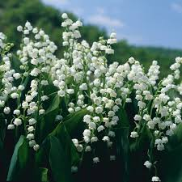

What is Lily of the Valley?
Lily of the Valley, scientifically known as Convallaria majalis, is a delicate and fragrant flowering plant belonging to the Asparagaceae family. Native to cool temperate regions of northern and eastern Europe, western Asia, and northwestern North America, it has become one of the most beloved flowers in the world.
Despite its delicate appearance — tiny white bells nodding along an arched stem — Lily of the Valley is a surprisingly resilient and long-lived perennial. It spreads via underground rhizomes and can establish dense colonies in shaded woodland gardens where little else will grow.

Botanical Characteristics
Scientific Classification:
- Kingdom: Plantae
- Family: Asparagaceae
- Genus: Convallaria
- Species: C. majalis
- Type: Herbaceous perennial
Physical Description: The plant grows from creeping underground rhizomes and typically reaches 6–12 inches in height. It produces two long, lance-shaped dark-green leaves that emerge from the base. The flowers appear in clusters of 5–13 along a single arching stem (raceme) — small, bell-shaped, drooping, and pure white. Each bell is about ¼ inch across.
Berries: After flowering, the plant produces bright red berries in late summer — attractive to look at but highly toxic.
Blooming Period: Typically April to May in temperate climates. The entire flowering display lasts approximately two to three weeks.
Historical Significance
Lily of the Valley has a rich and storied history spanning many centuries. In medieval times, the plant was associated with the Virgin Mary and was sometimes called "Our Lady's Tears." European monks cultivated it in monastery gardens for its medicinal properties and spiritual significance.
During the Victorian era, when the "language of flowers" was at its cultural peak, Lily of the Valley symbolized humility and purity. It appeared frequently in Victorian poetry, floral arrangements, and illustrations.
The plant gained royal prominence when it appeared in Queen Elizabeth II's 1953 coronation bouquet, and it has since featured in the bridal bouquets of Kate Middleton (2011) and Princess Grace of Monaco (1956). In Finland, it is the national flower. In Japan, it is known as suzuran (鈴蘭) — the flower of happiness.
Cultural & Symbolic Meaning
Across different cultures and traditions, Lily of the Valley carries meaningful symbolism:
- Christian Tradition: Associated with purity, humility, and the Virgin Mary ("Our Lady's Tears")
- French Culture: Gifted on May 1st (fête du muguet) as a token of good luck — a tradition since 1561
- Victorian Era: "You have made my life complete" — the highest declaration in the language of flowers
- Japanese Culture: Suzuran (鈴蘭) symbolises the return of happiness; Hokkaido's official flower
- Norse Folklore: Linked to the goddess Ostara; used as fairy lanterns in Germanic tales
- Modern: May birth flower, national flower of Finland, associated with motherhood and new beginnings
Growing & Care Summary
- Hardiness Zones: USDA 2–9
- Light: Partial to full shade
- Soil: Moist, well-drained, humus-rich, slightly acidic (pH 6.0–7.0)
- Watering: Consistently moist; mulch to retain moisture
- Planting: Fall or early spring; rhizomes 6 inches apart, growing tip at soil surface
- Fertilising: Balanced slow-release fertiliser in spring — minimal needs
- Propagation: Divide rhizomes every 4–5 years in fall or spring
⚠️ Important Safety Information
All parts of Lily of the Valley — leaves, flowers, berries, roots, and even the water in a flower vase — are highly toxic to humans, dogs, and cats. The plant contains cardiac glycosides (including convallatoxin) that can disrupt heart function.
If ingestion is suspected, contact Poison Control or a medical professional immediately. Wash hands thoroughly after handling the plant.
Popular Cultivars
While the species is beautiful, several cultivars offer unique features:
- Fortin's Giant — Larger flowers and robust, vigorous growth
- Rosea — Delicate pink-tinted bells instead of white
- Albostriata — Striking cream-striped variegated foliage
- Flore Pleno — Fully double white flowers for extra fullness
- Prolificans — Branching stems with clustered blooms
- Reginae — Renowned for its exceptionally powerful fragrance